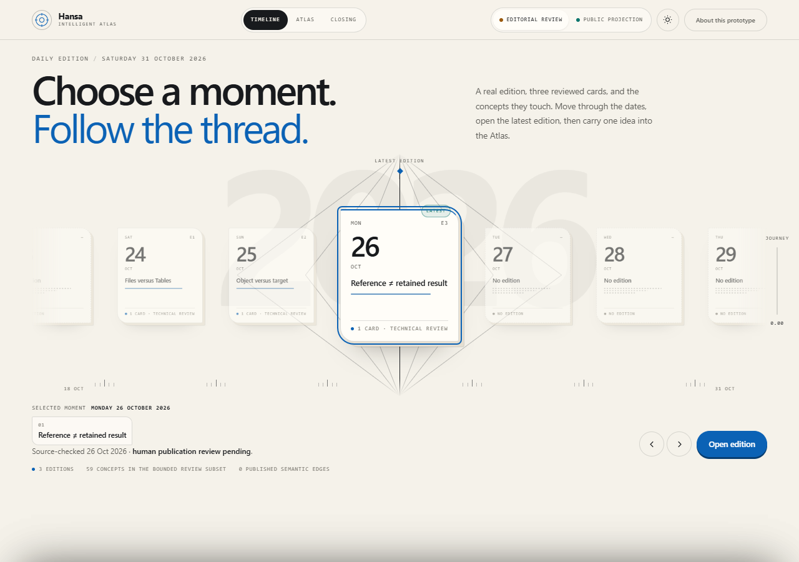
Choose a moment.
A fourteen-day ledger. Three real editions, eleven honest empty dates, one selected moment.
- What
- Date cards 18–31 October. 24, 25, 26 carry one real card each; later dates say No edition. The footer states 3 editions · 59 concepts · 0 published semantic edges.
- Why
- The timeline is a ledger, not a carousel. The selected card is raised on a blue rule and linked to the latest-edition marker by thin cables. The giant background 26 is the selected date, cropped — not decoration.
- Interaction
- Arrow keys move;
Home/Endjump;Enteropens. Drag or wheel moves the rail. Empty dates open a labelled empty state, never a fabricated card. - Evidence
- Real
content/knowledge/insights.jsoneditions only. The clock is fixed at 31 October 2026; no future edition is implied.
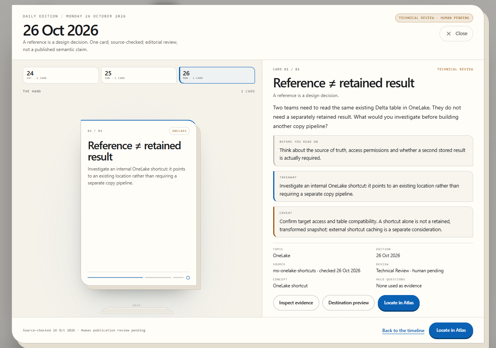
Read one card.
One edition, one card, one reader. The deck metaphor never fans out cards that do not exist.
- What
- The 26 October edition. The rail shows 24 · 25 · 26. The hand says 1 card and 01 / 01. The reader carries scenario, a before-you-read prompt, takeaway, caveat and metadata.
- Why
- The badge says Technical review · human pending, not published. The caveat has the same visual weight as the takeaway because the source has a real limitation.
- Interaction
Escapecloses from the card. Evidence and destination are reader states, not nested dialogs. Edition switches preserve each edition's reader view.- Evidence
- Card text is copied from the real insight; locator
What are shortcuts?; Internal OneLake shortcuts; Caching. Held questions are listed as held and never used as evidence.
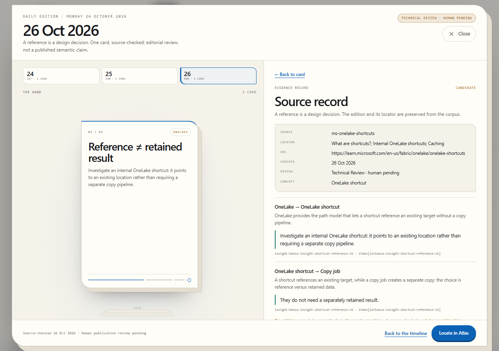
Inspect the evidence.
A locator and a verbatim slice — not a summary, not an answer, not a publication claim.
- What
- Source ID, locator, URL, checked date, review state and concept. Below: the candidate relations the card touches, each with a supporting quote and unit reference. The badge says Candidate.
- Why
- Showing relation context makes the difference between “the card says” and “the corpus supports” visible. Evidence is a reader state, so there is still one dialog and one focus trap.
- Interaction
Escapeor Back to card returns. The primary-source link opens in a new tab withrel="noreferrer". No answer, score or “correct” interpretation is exposed.- Evidence
- The quote is a verbatim corpus slice; the locator resolves in the analysis ledger. Relation labels remain candidate assertions.
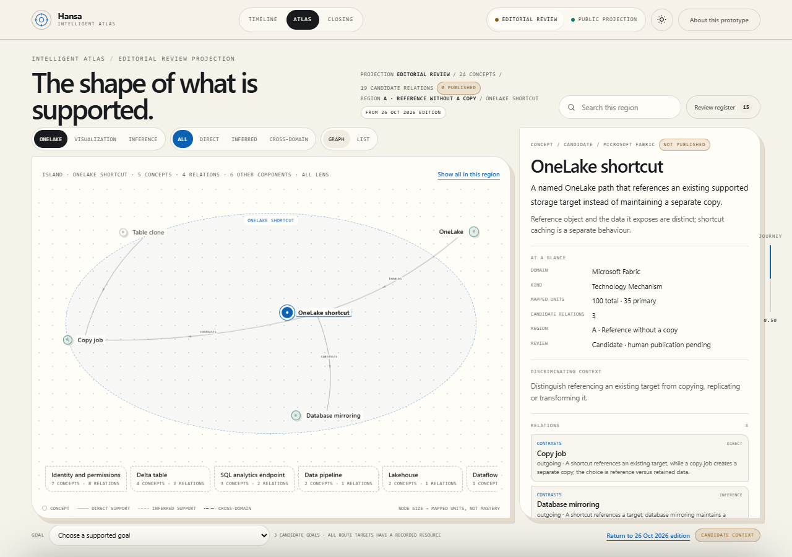
Follow the thread.
An archipelago of real components. No invented bridges, no published edges, no graph-only path.
- What
- OneLake island: 5 concepts · 4 relations · 6 other components. Detail: 100 mapped units, 35 primary, 3 candidate relations. Goal bar with three supported goals. Return control: Return to 26 Oct 2026 edition.
- Why
- Only real components are islands. The selected island is in focus; other components become aggregate cards. Show all reveals the bounded region. List view is the complete accessible alternative.
- Interaction
- Search, lens filters, arrow-key movement,
Enterto select, Locate preserves the return context. Public mode replaces the graph with an empty plate and withholds candidates. - Evidence
- Review state and mapped-unit count are named in the panel. Footer says 0 published. The graph is explicitly an editorial-review projection.
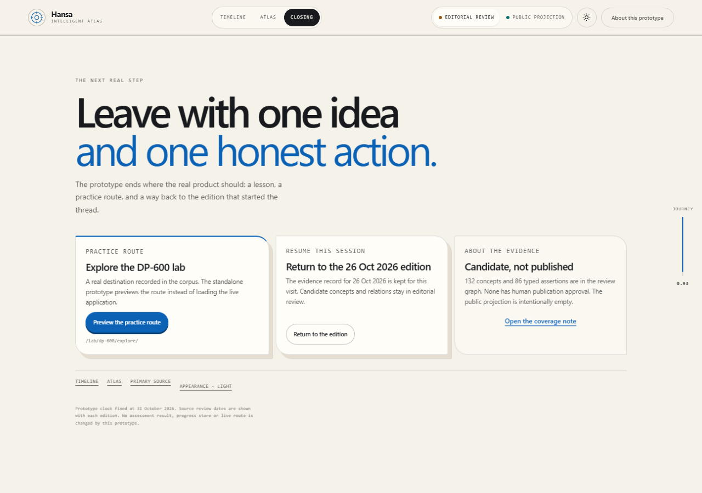
Leave with one honest action.
A real practice route, a preserved edition thread, and a coverage note that refuses to round “analysed” up to “published”.
- What
- Practice route
/lab/dp-600/explore/; return to the 26 October edition; coverage note: 132 concepts · 86 typed assertions · none published. Footer repeats the fixed clock and the no-progress/no-assessment boundary. - Why
- The ending is a hand-off, not a completion badge. The practice route is real but previewed, not executed. The return keeps the thread alive.
- Interaction
- Preview the route inside the prototype boundary; return reopens the Dealer at the preserved view; the coverage note opens the About panel with withheld counts and gate states.
- Evidence
- Real route, real graph counts, gates still blocked/pending. No assessment result is fabricated.
Appendix · evidence of adaptation
The same story at other sizes.
Sixteen captures cover 320, 390 and 768 pixels, dark theme, reduced motion and the fail-closed public projection. They are visual evidence, not a substitute for the interaction suites.
320 px small phone
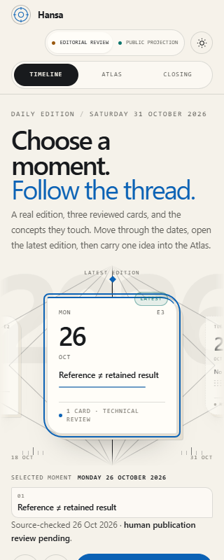
No horizontal overflow; date cards remain reachable.
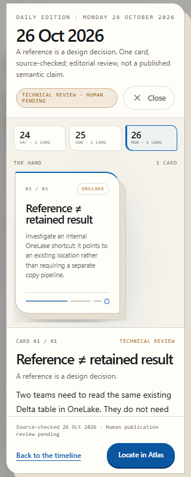
Body scrolls as one surface; hand card not clipped.
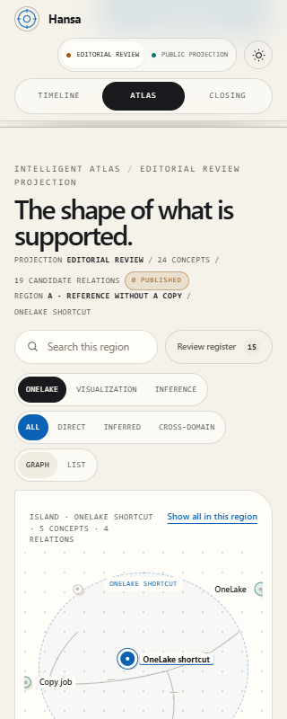
Focused layout; caption shortened under 560 px.
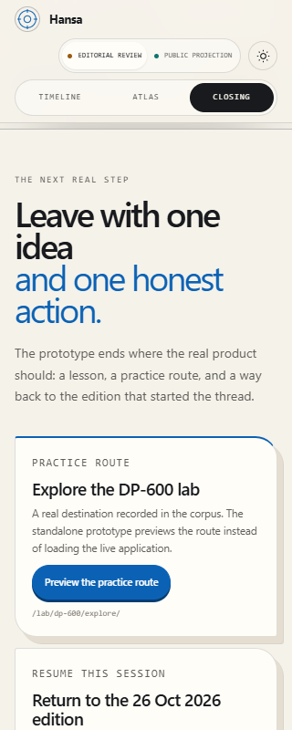
Cards stack; actions remain visible.
390 px phone
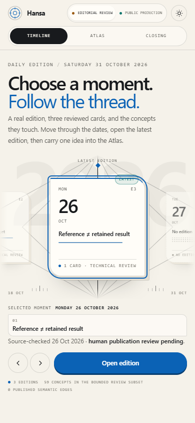
Selected edition and journey progress remain legible.
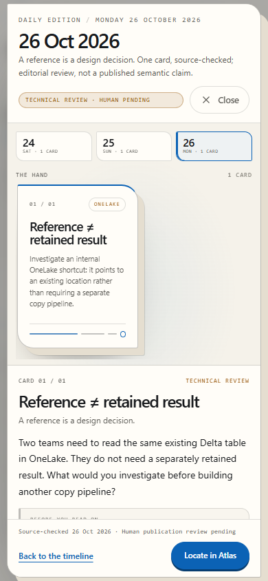
Edition rail and hand stay usable.
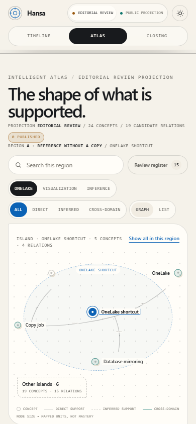
Side-aware labels; right-edge nodes not clipped.
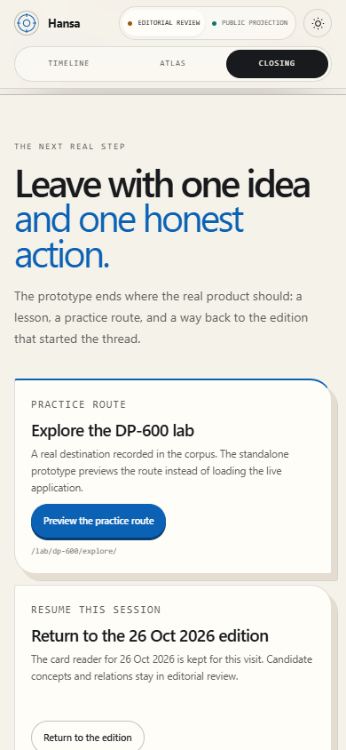
Practice and return actions fit.
768 px tablet
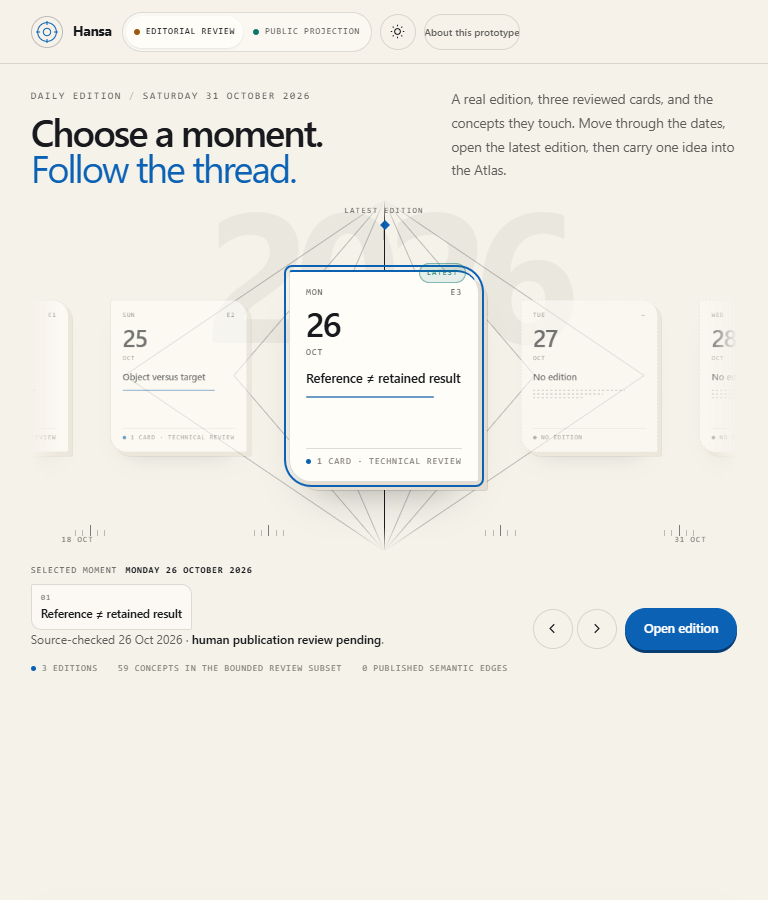
Tablet layout keeps the ledger readable.
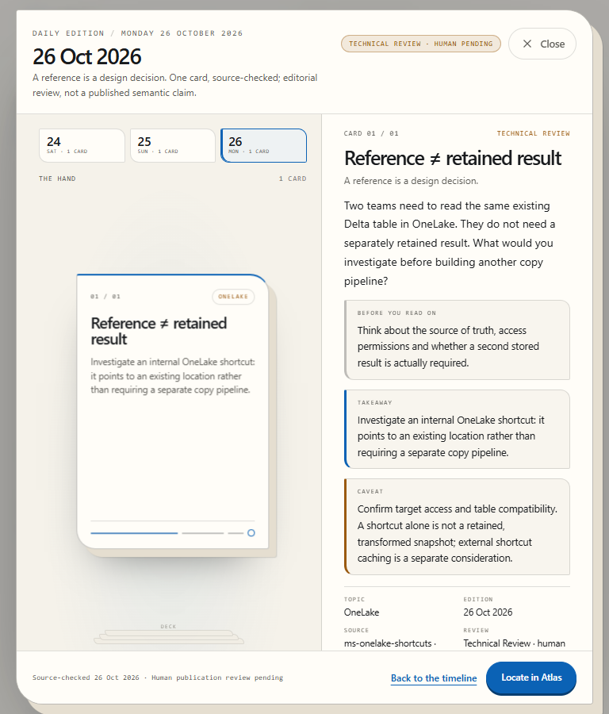
Two columns; reader scrolls internally; card fully visible.
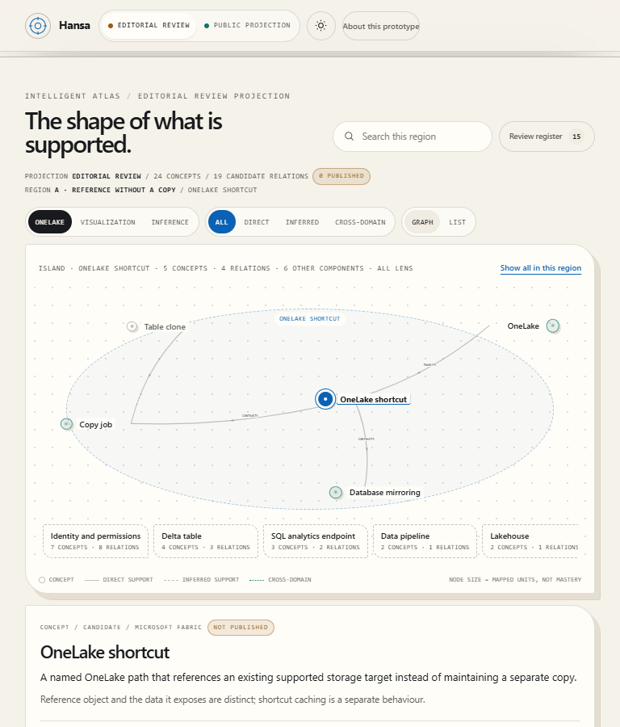
Detail panel and graph remain usable.
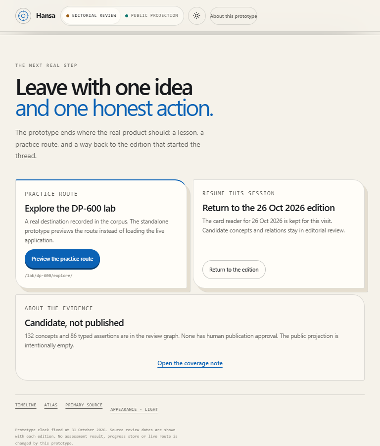
Hand-off cards fit without clipping.
Themes and motion 1280 px
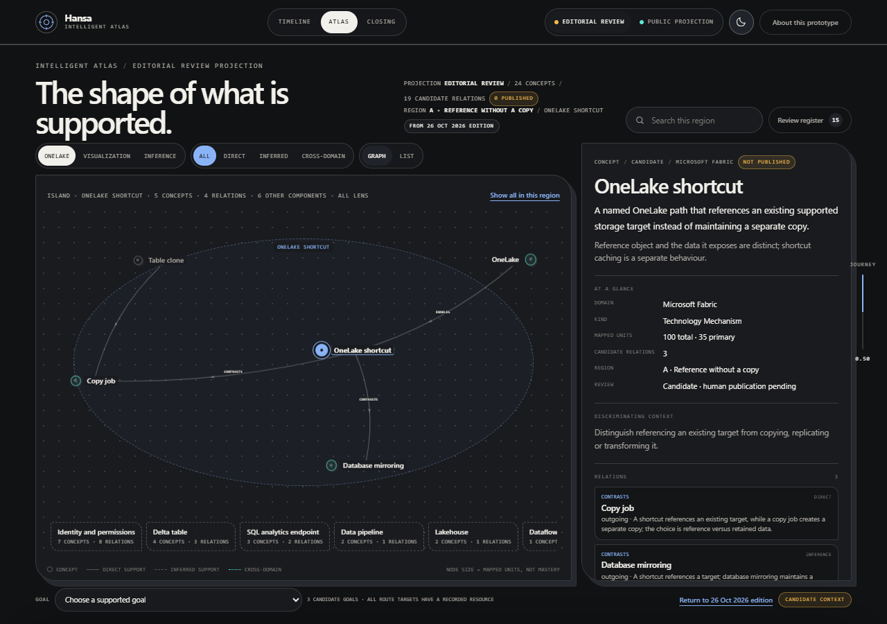
Theme persists; candidate amber and selection blue keep contrast.
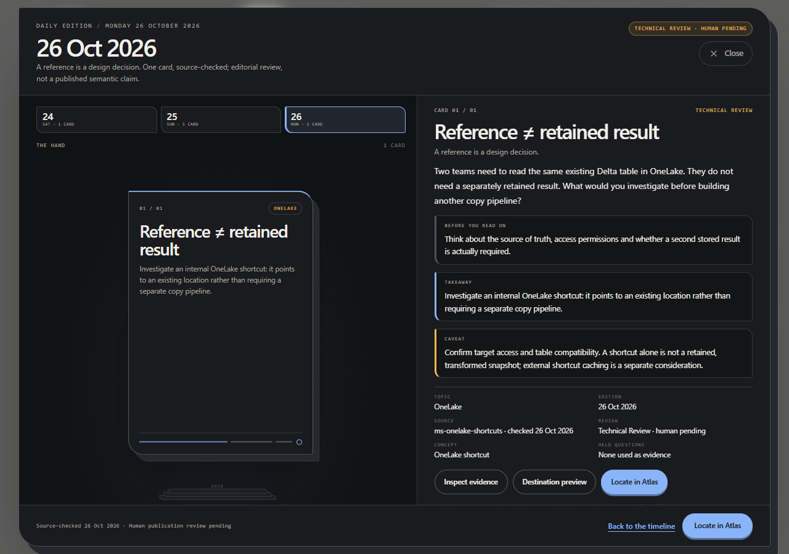
Reader surfaces and edition rail remain distinct.
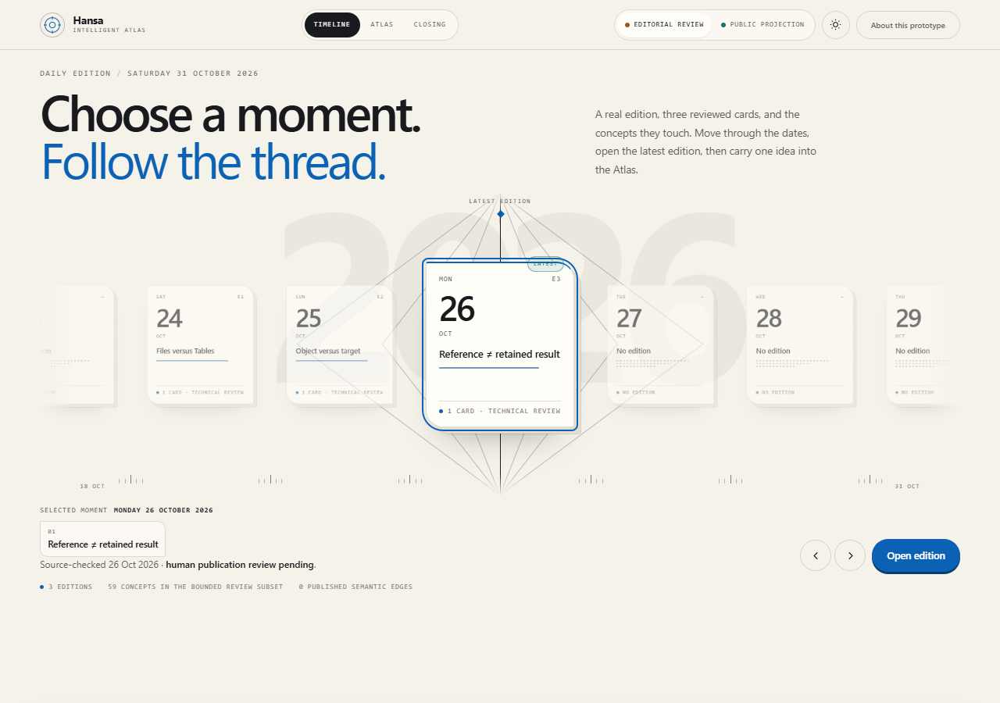
Static stacked layout; same content, no deal animation.
Public projection fail-closed
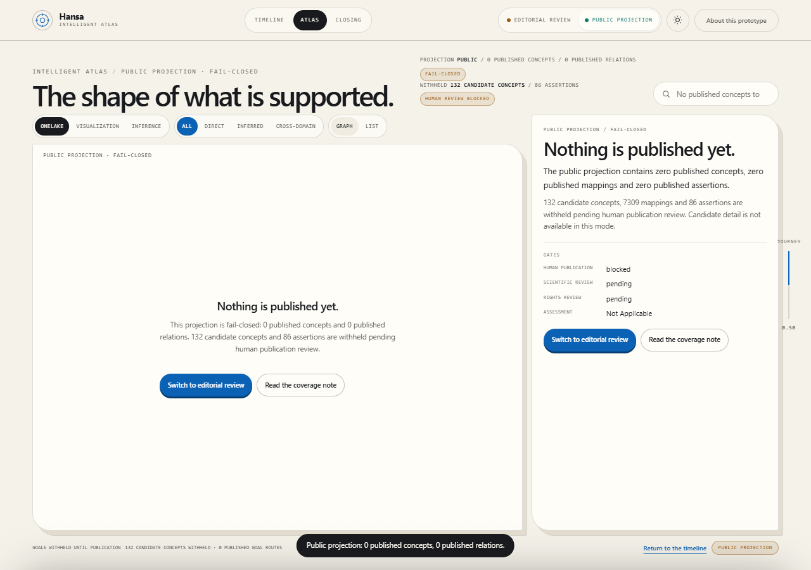
Zero published concepts, mappings and assertions. Candidate counts and gate states stay visible; candidate concepts, edges and evidence do not render.
BlueSelection, navigation and the honest primary action. Never used to imply publication.
AmberCandidate review state, caveats and “human pending” notices.
NeutralPublished or withheld surfaces. In public mode the graph is an empty plate.